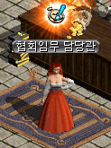

韓国 2016年12月14日アップデート
※韓国公式と韓国人プレイヤーの情報を基にしています。誤訳や韓国独自仕様の可能性もありますので、予めご了承下さい。2016年12月14日 韓国アップデートの変更内容一覧
メイド覚醒
冒険レポート2
ネフォンクリーチャーPVP
クリスマスコクーン販売
マスケッティアのクリスマスコスチューム追加
火属性十字架を黒魔術師が着用できように変更
レイド修正
メイド覚醒
物理攻撃に魔法ダメージが付与されるマジェスティックサーバント、遠距離特化型のルナティックサーバント、移動速度に応じて威力が変化するアージェントサーバントの3タイプが実装されました。
 |
?魔法の力が欲しいです。 →マジェスティックサーバント ?強力な遠距離攻撃をしたいです。 →ルナティックサーバント ?突進の力が欲しいです。 →アージェントサーバント |
| マジェスティックサーバント | ||
|---|---|---|
 |
||
| 覚醒スキル （前提スキル） |
変更点 | |
| 本能の加護 | 専用パッシブスキル 黒魔術師で装備していた十字架の効果のうち20％がメイド状態でも適応される |
|
| ディスロブドレス （ストリップドレス） |
専用強化スキル 十字架着用中はダメージが十字架の属性となる |
|
| 掃除の邪魔しちゃお仕置きよ （掃除の邪魔しちゃダメ） |
強化スキル 混乱付加 |
|
| 超ヘビーブルーム （ヘビーブルーム） |
強化スキル ターゲットの魔法抵抗弱化 |
|
| ルナティックサーバント | ||
 |
||
| 覚醒スキル （前提スキル） |
変更点 | |
| スローイングパフォーマンス | 専用パッシブスキル 射程距離40増加 |
|
| ネープルスサッドニース (マッドラッシュ) |
専用強化スキル 移動速度低下 |
|
| 拡張ブルームスパイラル (ブルームスパイラル) |
強化スキル ドローボディー効果 |
|
| ドラインドプレート （スローイングディッシュ） |
強化スキル 跳ね返り回数に応じてダメージ上昇 |
|
| アージェントサーバント | ||
 |
||
| 覚醒スキル （前提スキル） |
変更点 | |
| 床ワックス | 専用パッシブスキル 移動速度が増加するほど与えるダメージが増える |
|
| これから大掃除 （パーフェクトクリーニング） |
専用強化スキル スキル使用後、一定時間生存率が上昇 |
|
| ホウキ突進 （ブルームアサルト） |
強化スキル ダメージを与えた敵の数に応じて移動速度上昇 |
|
| アルティメットブルームラッシュ （エクストリームブルームラッシュ） |
強化スキル ？ |
|
冒険レポート2
冒険家レポート1と同様に、適正Lv（クエスト受諾可能Lv+100以下）でクリアするとボーナス経験値がつきます。
|  |
冒険家レポート2はLv25〜 冒険家協会ブルンネンシュティグ本部の協会任務担当官より、受諾できます。 |
 |
冒険家レポート1と2は、 同時に進行することができます。 |
.gif) |
冒険家レポート(1) 旧レッドアイ研究所B1 モンスターを20匹倒す 経験値79万1590 冒険団コイン1枚 |
 |
冒険家レポート(2) オーガの王窟B1 モンスターを30匹倒す 経験値343万6180 冒険団コイン1枚 |
 |
冒険家レポート(3) トワイライト滝B4 モンスターを40匹倒す 経験値1692万7240 冒険団コイン1枚 |
| クエスト | 受諾条件 | 内容 | |
|---|---|---|---|
| 転生回数 | Lv | ||
| 冒険家レポート(1) | 0回 | Lv25 | 旧レッドアイ研究所B1 モンスター20匹狩り |
| 冒険家レポート(2) | 0回 | Lv75 | オーガの王窟B1 モンスター30匹狩り |
| 冒険家レポート(3) | 0回 | Lv125 | トワイライト滝B4 モンスター40匹狩り |
| 冒険家レポート(4) | 0回 | Lv175 | 秘密ダンジョン2回 |
| 冒険家レポート(5) | 0回 | Lv225 | ラカリフサ北の洞窟 モンスター50匹狩り |
| 冒険家レポート(6) | 0回 | Lv275 | スウェブタワー19F モンスター60匹狩り |
| 冒険家レポート(7) | 0回 | Lv325 | 適正Lvの異能体モンスター10匹狩り |
| 冒険家レポート(8) | 0回 | Lv375 | スウェブタワーB8 モンスター70匹狩り |
| 冒険家レポート(9) | 0回 | Lv425 | スウェブタワーB11 モンスター80匹狩り |
| 冒険家レポート(10) | 0回 | Lv475 | 秘密ダンジョン2回 |
| 冒険家レポート(11) | 0回 | Lv525 | 兵舎B1 モンスター90匹狩り |
| 冒険家レポート(12) | 0回 | Lv575 | 商店2F モンスター100匹狩り |
| 冒険家レポート(13) | 0回 | Lv625 | 適正Lvの異能体モンスター20匹狩り |
| 冒険家レポート(14) | 0回 | Lv675 | レイド1回クリア |
| 冒険家レポート(15) | 1回 | Lv425 | 適正Lvの異能体モンスター10匹狩り |
| 冒険家レポート(16) | 1回 | Lv475 | 秘密ダンジョン2回 |
| 冒険家レポート(17) | 1回 | Lv525 | 適正Lvの異能体モンスター15匹狩り |
| 冒険家レポート(18) | 1回 | Lv575 | レイド1回クリア |
| 冒険家レポート(19) | 1回 | Lv625 | 秘密ダンジョン2回 |
| 冒険家レポート(20) | 1回 | Lv675 | 適正Lvの異能体モンスター20匹狩り |
| 冒険家レポート(21) | 2回 | Lv425 | 適正Lvの異能体モンスター10匹狩り |
| 冒険家レポート(22) | 2回 | Lv475 | 秘密ダンジョン2回 |
| 冒険家レポート(23) | 2回 | Lv525 | 適正Lvの異能体モンスター15匹狩り |
| 冒険家レポート(24) | 2回 | Lv575 | レイド1回クリア |
| 冒険家レポート(25) | 2回 | Lv625 | 秘密ダンジョン2回 |
| 冒険家レポート(26) | 2回 | Lv675 | 適正Lvの異能体モンスター20匹狩り |
| 冒険家レポート(27) | 3回 | Lv425 | 適正Lvの異能体モンスター10匹狩り |
| 冒険家レポート(28) | 3回 | Lv475 | 秘密ダンジョン2回 |
| 冒険家レポート(29) | 3回 | Lv525 | 適正Lvの異能体モンスター15匹狩り |
| 冒険家レポート(30) | 3回 | Lv575 | レイド1回クリア |
| 冒険家レポート(31) | 3回 | Lv625 | 秘密ダンジョン2回 |
| 冒険家レポート(32) | 3回 | Lv675 | 適正Lvの異能体モンスター20匹狩り |
| 冒険家レポート(33) | 4回 | Lv425 | 適正Lvの異能体モンスター10匹狩り |
| 冒険家レポート(34) | 4回 | Lv475 | 秘密ダンジョン2回 |
| 冒険家レポート(35) | 4回 | Lv525 | 適正Lvの異能体モンスター15匹狩り |
| 冒険家レポート(36) | 4回 | Lv575 | レイド1回クリア |
| 冒険家レポート(37) | 4回 | Lv625 | 秘密ダンジョン2回 |
| 冒険家レポート(38) | 4回 | Lv675 | 適正Lvの異能体モンスター20匹狩り |
ネフォンクリーチャーPVP
 |
冒険家協会ブルンネンシュティグ本部のクリーチャーPVP担当官（44.41）にて、ネフォンクリーチャーPVPを申し込むことができます。 |
 |
ネフォンクリーチャーをPVPチームにセット |
 PVP実行時に活動ポイントを1消費します。 活動ポイントは10ポイントあり、0時に初期化されます。 対戦相手は、勝ち点の近いプレイヤー16人の中からランダムで4人が表示されます。 実在するキャラクターが実際にPVPチームにセットしているクリーチャーチームです。 勝ち点は、初期値1000から勝敗により増減します。 |
|
 |
（キャラクター名）との決闘を希望しますか？ ※活動ポイントが1消費されます。 |
 対戦は自動で進行します。 1ターンずつお互いに攻撃していく経過を見ることができます。 |
|
 経過を省略して結果だけ表示することもできます。 |
|
 1勝して勝ち点が10点増加しました。 倒した相手にはチェックがつき、再戦はできません。 負けた相手には何度でも再戦を申し込むことができます。 現時点では勝敗による報酬やペナルティは何もありませんが、勝ち点によりバッジのランクが10段階まで上がるので、今後、勝ち点ランキングによる報酬が何か実装されるかもしれません。 |
|
 |
6時間ごとに一日4回、 対戦相手が自動で更新されます。 手動で更新する場合は、1回目は無料。 |
 |
2回目は1万ゴールドを消費します。 手動更新は一日3回まで行うことができます。 |
クリスマスコクーン販売
クリスマス限定のネフォンクリーチャーが出現するクリスマスコクーンが2000ウォンで販売開始されました。


マスケッティアのクリスマスコスチューム追加
マスケッティアのクリスマスコスチュームが追加されました。


火属性十字架を黒魔術師が着用できように変更
黒魔術師は闇属性十字架のみ着用可能でしたが、火属性も着用可能になりました。
 |
<着用可能な職業> 追放天使 悪魔 黒魔術師 |
レイド修正
時間帯が1時間ごとの一日24回に増加、参加可能人数の枠が40人→60人に増加しました。